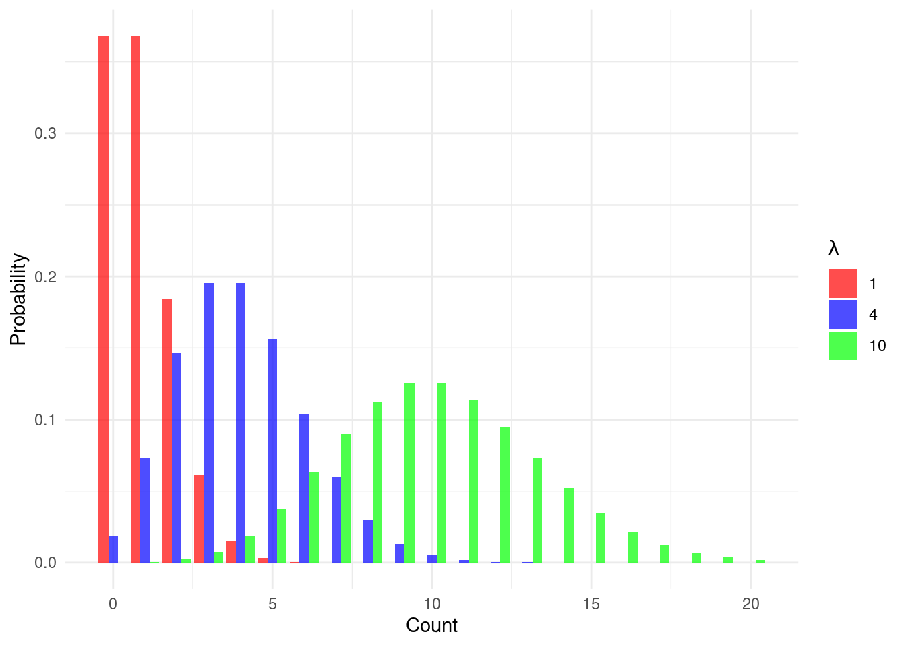
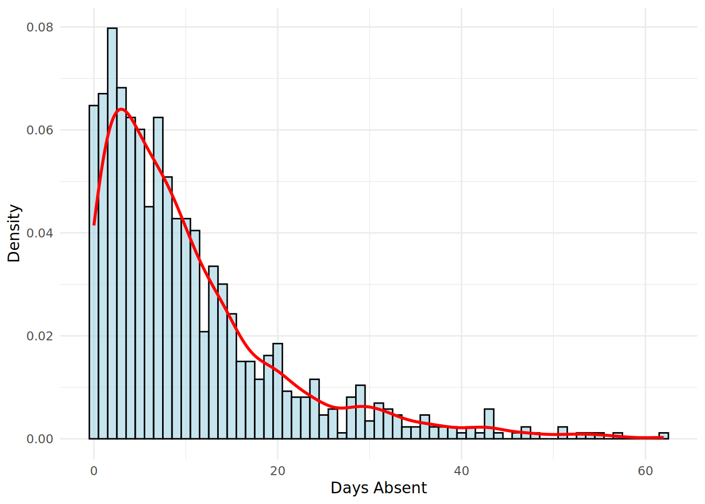

8 Poisson, Quasi-Poisson and Negative Binomial Regression for Count Outcomes
In the previous chapters, we have explored how to model outcomes that are continuous, binary or multinomial in nature. We now turn our attention to another common type of data in people analytics: count data. Count data consists of non-negative integers (0, 1, 2, 3, …) that represent the number of times an event has occurred within a specific period of time, location, or group. Examples in the workplace are numerous: the number of safety incidents in a factory per month, the number of days an employee was absent in a year, or the number of customer complaints received by a service agent in a week.
Because count data is not continuous and is bounded below at zero, linear regression is not appropriate. The assumptions of normality and constant variance of residuals are typically violated. A linear model could also illogically predict negative counts. While we could model a binary outcome (e.g., ‘had at least one absence’ vs. ‘had zero absences’) using logistic regression, this approach throws away a lot of valuable information about the magnitude of the count.
To properly model count outcomes, we turn to other members of the generalized linear model (GLM) family. First we will look at Poisson regression. Poisson regression is specifically designed for count data and, like logistic regression, uses a transformation–—in this case, the natural logarithm—–to establish a linear relationship between the input variables and the (transformed) outcome. However, Poisson regression rests on a very strong assumption that the mean and variance of the count variable are equal. When this assumption is violated, a condition known as overdispersion (or more rarely underdispersion) occurs, and the Poisson model’s estimates can become unreliable. In this case, we will see that related models, namely Quasi-Poisson or negative binomial regression models, provide more flexible alternatives. Mastering these techniques is essential for any analyst who wants to understand the drivers of event-based phenomena in the workplace.
8.1 When to use it
8.1.1 Origins and intuition of the Poisson distribution
The Poisson distribution is named after the French mathematician Siméon Denis Poisson, who introduced it in 1837 in a work that focused on the probability of wrongful convictions in court cases1. However, the distribution’s most famous early application came sixty years later from the Polish-Russian economist and statistician Ladislaus von Bortkiewicz.
Bortkiewicz analyzed data on the number of Prussian cavalry soldiers who were fatally kicked by their horses each year across 14 different army corps over a 20-year period. He observed that this was a “rare event.” In any given corps in any given year, the number of deaths was very low, but often not zero. He found that the observed frequency of 0, 1, 2, or more deaths per corps-year closely matched the predictions of the Poisson distribution. The key insight is that the Poisson distribution effectively models the number of times an event occurs in a fixed interval of time or space, given that these events happen with a known constant mean rate (denoted by \(\lambda\)) and are independent of the time since the last event. The shape of the distribution for different mean rates is shown in Figure 8.1. For a low mean, the distribution is highly skewed with most observations at or near zero. As the mean increases, the distribution becomes more symmetric and starts to resemble a normal distribution.
The core idea of modeling rates is central to Poisson regression. We are not just modeling a count; we are modeling the expected rate at which events occur, and then examining how different factors or characteristics influence that rate.
8.1.2 Use cases for count regression
Poisson, Quasi-Poisson and negative binomial regression can be used when the outcome of interest is a count of events. Here are some example questions that could be approached using these methods:
- What are the characteristics of employees that are associated with a higher number of days of unplanned absence per year?
- What are the characteristics of job openings that are associated with a higher number of referrals from existing employees?
- What elements in a factory’s environment are related to the number of safety incidents per month?
8.1.3 Walkthrough example
You are an analyst at a large technology firm. The HR leadership team is concerned about employee absenteeism and wants to understand what factors are associated with higher absenteeism in order to better target support and intervention programs. They believe that factors like an employee’s tenure with the company, their performance, and whether or not they are a manager could all play a role.
You are provided with a data set of 865 employees for the most recent full year. The absenteeism data set contains the following fields:
days_absent: The number of unscheduled days of absence for the employee in the last calendar year (our outcome variable).tenure: The employee’s tenure at the company in years.is_manager: A binary value indicating 1 if the employee is a manager and 0 if not.performance_rating: The employee’s most recent performance score on an increasing scale from 1 to 5.
Let’s download the absenteeism data set and take a quick look at it.
# if needed, download data
url <- "https://peopleanalytics-regression-book.org/data/absenteeism.csv"
absenteeism <- read.csv(url)head(absenteeism) days_absent tenure is_manager performance_rating
1 2 16 0 2
2 13 4 0 5
3 0 0 0 3
4 8 24 0 5
5 12 9 0 3
6 8 3 0 4The data looks as expected, but we should do some type conversion for the is_manager column before we get a summary.
# convert is_manager to factor
absenteeism$is_manager <- as.factor(absenteeism$is_manager)
summary(absenteeism) days_absent tenure is_manager performance_rating
Min. : 0.00 Min. : 0.00 0:753 Min. :1.000
1st Qu.: 3.00 1st Qu.: 8.00 1:112 1st Qu.:3.000
Median : 7.00 Median :15.00 Median :3.000
Mean :10.26 Mean :15.16 Mean :3.473
3rd Qu.:14.00 3rd Qu.:23.00 3rd Qu.:4.000
Max. :62.00 Max. :30.00 Max. :5.000 We see that days_absent ranges from 0 to 62, with a mean of 10.26. The distribution of absences is shown in Figure 8.2.

days_absent with histogram and density plot
This is a highly right-skewed distribution, with most employees having a low number of absences and a “long tail” of employees with a high number of absences. This is a classic shape for count data, and suggests that Poisson regression is a good initial approach for this problem.
8.2 Modeling count outcomes with Poisson regression
We cannot directly model a count outcome with a linear equation because the expected count must be non-negative. As with logistic regression, we will need a transformation to connect the linear combination of our input variables to the expected count.
8.2.1 The Poisson model and the log transformation
The formula for the Poisson distribution gives the probability of observing exactly \(k\) events in an interval, given a mean event rate of \(\lambda\):
\[ P(Y=k) = \frac{\lambda^k e^{-\lambda}}{k!} \]
We assume that the expected event count \(\lambda_i\) for each individual observation \(i\) depends on that observation’s input variables \(x_{1i}, x_{2i}, \dots, x_{pi}\). To ensure that our outcome is always positive, we model the natural logarithm of \(\lambda_i\) as a linear function of the input variables. This is the log transformation.
\[ \ln(\lambda_i) = \beta_0 + \beta_1x_{i1} + \beta_2x_{i2} + \cdots + \beta_px_{ip} \]
This equation should look familiar. It’s a linear model, just like in linear regression. The crucial difference is that we are not modeling the expected count outcome directly; we are modeling the log of the expected count.
By exponentiating both sides, we can see how the input variables relate to the expected count itself:
\[ \begin{aligned} \lambda_i &= e^{\beta_0 + \beta_1x_{i1} + \beta_2x_{i2} + \cdots + \beta_px_{ip}} \\ &= e^{\beta_0}(e^{\beta_1})^{x_{i1}}(e^{\beta_2})^{x_{i2}}\cdots(e^{\beta_p})^{x_{ip}} \end{aligned} \]
This shows that the effects of the input variables are multiplicative on the expected count \(\lambda_i\). This is analogous to work we have done in previous chapters, where exponentiated logistic regression coefficients have a multiplicative effect on the odds of an outcome.
8.2.2 Fitting and interpreting a Poisson regression model
Let’s fit a Poisson model to our absenteeism data to understand which inout variables are associated with absent days. We use the glm() function, specifying family = "poisson" which automatically uses the log transformation.
# run a poisson model
absent_poisson_model <- glm(
formula = days_absent ~ tenure + is_manager + performance_rating,
data = absenteeism,
family = "poisson"
)
# view the summary
summary(absent_poisson_model)
Call:
glm(formula = days_absent ~ tenure + is_manager + performance_rating,
family = "poisson", data = absenteeism)
Coefficients:
Estimate Std. Error z value Pr(>|z|)
(Intercept) 1.505418 0.054170 27.791 < 2e-16 ***
tenure 0.051144 0.001270 40.280 < 2e-16 ***
is_manager1 -0.157984 0.033025 -4.784 1.72e-06 ***
performance_rating -0.009937 0.013878 -0.716 0.474
---
Signif. codes: 0 '***' 0.001 '**' 0.01 '*' 0.05 '.' 0.1 ' ' 1
(Dispersion parameter for poisson family taken to be 1)
Null deviance: 7544.2 on 864 degrees of freedom
Residual deviance: 5799.6 on 861 degrees of freedom
AIC: 8927
Number of Fisher Scoring iterations: 5The summary output is similar to what we’ve seen before. We have coefficient estimates, standard errors, z-values, and p-values. Let’s interpret the tenure coefficient. For a one-year increase in tenure, the log of the expected number of absent days increases by 0.0511, holding all other variables constant. A much more intuitive interpretation comes from exponentiating the coefficients. The exponentiated value is called an Incidence Rate Ratio (IRR). The IRR tells us the multiplicative factor by which the expected count changes for a one-unit increase in the input variable.
Let’s calculate the IRRs for our model.
# Exponentiate coefficients to get Incidence Rate Ratios (IRRs)
(irr <- exp(coef(absent_poisson_model))) (Intercept) tenure is_manager1 performance_rating
4.5060347 1.0524742 0.8538633 0.9901123 Now we can interpret these more easily:
**Intercept:**4.51 is the expected number of absent days for a brand new non-manager with a performance rating of 1. This is not practically meaningful, but serves as the baseline for the model.**tenure:**The IRR is 1.0525. For each additional year of tenure, the expected count of absent days increases by about 5%, holding other factors constant.**is_manager1:**The IRR is 0.8539. This means that being a manager (compared to not being a manager) is associated with an expected absent day count that is 0.8539 times the count for a non-manager, or about 15% lower, holding other factors constant.**performance_rating:**The IRR is 0.9901. For each one-level increase in performance rating, the expected number of absent days decreases by about 1%, holding other factors constant. However, this effect is not statistically significant.
Just as with logistic regression, we can calculate confidence intervals for these IRRs to understand the range of plausible values for the effect.
# Confidence intervals for the IRRs
exp(confint(absent_poisson_model)) 2.5 % 97.5 %
(Intercept) 4.0513303 5.0097586
tenure 1.0498634 1.0551020
is_manager1 0.7999133 0.9104788
performance_rating 0.9635426 1.0174134For example, we are 95% confident that for each additional year of tenure, the incidence rate ratio is between 1.05 and 1.055. Since this entire range is above 1, we can be confident that the relationship is positive and statistically significant.
8.3 Model diagnostics: overdispersion
Before we can trust our Poisson model’s conclusions, we must check its primary assumption: that the mean (expected value) and variance of the count outcome are approximately equal. That is, \(E(y) \approx Var(y)\). In real-world data, this assumption is rarely met. It is far more common for the variance to be larger than the mean2. This is called overdispersion (\(Var(y) > E(y)\)).
Overdispersion is common for a number of reasons, including:
Unobserved Heterogeneity: There may be other unmeasured factors that influence the count. For instance, in our example some employees might have chronic health conditions that make them more prone to absence. This creates extra variability in the counts that is not captured by our input variables.
Clustering or Non-independence: Events may not be independent. If one person in a team gets a virus or flu, it might spread, leading to a cluster of absences. This violates the Poisson assumption that events are independent.
If we use a Poisson model on overdispersed data, the coefficient estimates (\(\beta\)) are still unbiased (correct on average), but their standard errors are underestimated. This makes the z-scores artificially large and the p-values artificially small. We might therefore conclude that a predictor is statistically significant when, in fact, it is not. Therefore, the model can become overconfident in its findings.
8.3.1 Detecting overdispersion
There are several ways to check for overdispersion.
Compare Mean and Variance: A simple ‘rule of thumb’ check is to compare the raw mean and variance of our outcome variable.
c(mean = mean(absenteeism$days_absent), variance = var(absenteeism$days_absent))mean variance 10.26243 103.25397The variance (103.25) is much larger than the mean (10.26), which is a strong initial sign of overdispersion.
Calculate the Dispersion Parameter: A more formal check comes from the model itself. The dispersion parameter is calculated by dividing the model’s residual deviance by its residual degrees of freedom. For a Poisson model, this value should be close to 1. A value significantly greater than 1 indicates overdispersion.
# Calculate dispersion parameter (dispersion_param <- summary(absent_poisson_model)$deviance/ summary(absent_poisson_model)$df.residual)[1] 6.735929Our dispersion parameter of 6.74 is substantially greater than 1, confirming that our data is overdispersed and the Poisson model is likely not appropriate.
Formal Hypothesis Test: The
AERpackage provides a formal test for overdispersion. The null hypothesis is that the data is equidispersed (mean = variance), while the alternative is that it is overdispersed. A small p-value provides evidence for overdispersion.library(AER) dispersiontest(absent_poisson_model)Overdispersion test data: absent_poisson_model z = 13.31, p-value < 2.2e-16 alternative hypothesis: true dispersion is greater than 1 sample estimates: dispersion 6.926057The very small p-value leads us to reject the null hypothesis and conclude that overdispersion is present. This suggests that we should search for an alternative approach that can handle overdispersed count data.
When we have confirmed that our count data is overdispersed, there are two alternative methods we can use: Quasi-Poisson regression and negative binomial regression.
8.3.2 Quasi-Poisson regression
Quasi-Poisson regression, which is a simple extension of the Poisson model, relaxes the assumption that the mean and variance are equal, allowing the variance to be a linear function of the mean. That is
\[ Var(y_i) = \theta \mu_i \]
where \(\theta\) is a dispersion parameter estimated from the data and \(\mu_i\) is the average event count (equivalent to \(\lambda_i\) in the Poisson model). We expect \(\theta > 1\) in the presence of overdispersion, and a greater \(\theta\) means greater dispersion. The coefficient estimates in a Quasi-Poisson model are identical to the Poisson model, but the standard errors are adjusted, which affects which input variables are returned as significant.
Quasi-Poisson regression can be performed in R using the glm() function with family = "quasipoisson".
# run a quasi-poisson model
absent_quasi_poisson_model <- glm(
formula = days_absent ~ tenure + is_manager + performance_rating,
data = absenteeism,
family = "quasipoisson"
)
# view the summary
summary(absent_quasi_poisson_model)
Call:
glm(formula = days_absent ~ tenure + is_manager + performance_rating,
family = "quasipoisson", data = absenteeism)
Coefficients:
Estimate Std. Error t value Pr(>|t|)
(Intercept) 1.505418 0.142929 10.533 <2e-16 ***
tenure 0.051144 0.003350 15.266 <2e-16 ***
is_manager1 -0.157984 0.087137 -1.813 0.0702 .
performance_rating -0.009937 0.036618 -0.271 0.7862
---
Signif. codes: 0 '***' 0.001 '**' 0.01 '*' 0.05 '.' 0.1 ' ' 1
(Dispersion parameter for quasipoisson family taken to be 6.96191)
Null deviance: 7544.2 on 864 degrees of freedom
Residual deviance: 5799.6 on 861 degrees of freedom
AIC: NA
Number of Fisher Scoring iterations: 5This model suggests that the is_manager variable is no longer statistically significant once we account for overdispersion. The coefficient estimates are the same as in the Poisson model, so the IRRs are unchanged.
8.3.3 Negative binomial regression
Another option in the presence of overdispersion is to use negative binomial regression. The negative binomial distribution is a generalization of the Poisson distribution that includes an additional dispersion parameter which allows the variance to be greater than the mean.
The variance for a negative binomial distribution is modeled as:
\[ Var(y_i) = \mu_i + \frac{\mu_i^2}{\theta} \]
where \(\theta\) is a dispersion parameter, so the term \(\frac{\mu_i^2}{\theta}\) allows for the extra variance. Note that in this model the variance is a quadratic function of the mean, rather than the linear function used in the Quasi-Poisson model. Note also that a greater \(\theta\) means less dispersion, and as \(\theta\) gets larger and approaches infinity, the term \(\frac{\mu_i^2}{\theta}\) approaches zero, and the variance approaches the mean \(\mu_i\). In this case, the negative binomial distribution converges to the Poisson distribution.
We can fit a negative binomial model in R using the glm.nb() function from the MASS package. The syntax is identical to glm().
library(MASS)
# run a negative binomial model
absent_nb_model <- glm.nb(
formula = days_absent ~ tenure + is_manager + performance_rating,
data = absenteeism
)
# view the summary
summary(absent_nb_model)
Call:
glm.nb(formula = days_absent ~ tenure + is_manager + performance_rating,
data = absenteeism, init.theta = 1.553571254, link = log)
Coefficients:
Estimate Std. Error z value Pr(>|z|)
(Intercept) 1.571059 0.147302 10.666 <2e-16 ***
tenure 0.049723 0.003338 14.894 <2e-16 ***
is_manager1 -0.138416 0.088722 -1.560 0.119
performance_rating -0.022527 0.039176 -0.575 0.565
---
Signif. codes: 0 '***' 0.001 '**' 0.01 '*' 0.05 '.' 0.1 ' ' 1
(Dispersion parameter for Negative Binomial(1.5536) family taken to be 1)
Null deviance: 1208.49 on 864 degrees of freedom
Residual deviance: 978.86 on 861 degrees of freedom
AIC: 5637.1
Number of Fisher Scoring iterations: 1
Theta: 1.5536
Std. Err.: 0.0894
2 x log-likelihood: -5627.0750 The output looks very similar to the Poisson and Quasi-Poisson summaries, but with one key addition: at the bottom, we see “Theta: 1.5536”. This is the estimated dispersion parameter \(\theta\). The summary() also provides a standard error for \(\theta\) and tests whether it is significantly different from infinity (i.e., whether the negative binomial model is a significant improvement over the Poisson model).
The interpretation of the coefficients is exactly the same as in the Poisson model. They are on the log-count scale, and we exponentiate them to get Incidence Rate Ratios (IRRs).
# IRRs for the negative binomial model
(irr_nb <- exp(coef(absent_nb_model))) (Intercept) tenure is_manager1 performance_rating
4.8117411 1.0509798 0.8707365 0.9777244 Let’s compare these with the IRRs from our original Poisson model.
# Compare IRRs side-by-side
cbind(IRR_Poisson = irr, IRR_NB = irr_nb) IRR_Poisson IRR_NB
(Intercept) 4.5060347 4.8117411
tenure 1.0524742 1.0509798
is_manager1 0.8538633 0.8707365
performance_rating 0.9901123 0.9777244The point estimates for the IRRs are quite similar. This is expected, as the coefficients are generally unbiased even when a Poisson model is used on overdispersed data. The real difference is in the standard errors and p-values.
# Compare standard errors
poisson_summary <- summary(absent_poisson_model)
nb_summary <- summary(absent_nb_model)
cbind(
SE_Poisson = poisson_summary$coefficients[, "Std. Error"],
SE_NB = nb_summary$coefficients[, "Std. Error"]
) SE_Poisson SE_NB
(Intercept) 0.054169623 0.147301916
tenure 0.001269716 0.003338447
is_manager1 0.033024551 0.088721754
performance_rating 0.013878275 0.039175545Notice that the standard errors for the negative binomial model are larger across the board. By accounting for the overdispersion, the negative binomial model provides more realistic (and conservative) estimates of the uncertainty around our coefficients. This leads to larger p-values and more trustworthy inferences. In this case, while tenure remains a significant input variable, we see that is_manager is no longer significant.
8.3.4 Comparing Poisson and negative binomial models
We have strong evidence that the negative binomial model is a better choice compared to the original Poisson model, but we can also formally compare the models. Since the Poisson model is a nested version of the negative binomial model (it’s what you get when \(\theta \to \infty\)), we can use a likelihood ratio test using the lmtest package to see if the addition of the \(\theta\) parameter provides a significant improvement in fit. This is a notable advantage of the negative binomial model over the Quasi-Poisson model, which does not have a likelihood function and therefore cannot be compared in this way.
library(lmtest)
lrtest(absent_poisson_model, absent_nb_model)Likelihood ratio test
Model 1: days_absent ~ tenure + is_manager + performance_rating
Model 2: days_absent ~ tenure + is_manager + performance_rating
#Df LogLik Df Chisq Pr(>Chisq)
1 4 -4459.5
2 5 -2813.5 1 3292 < 2.2e-16 ***
---
Signif. codes: 0 '***' 0.001 '**' 0.01 '*' 0.05 '.' 0.1 ' ' 1The extremely small p-value indicates that the negative binomial model provides a significantly better fit to the data than the Poisson model.
We can also compare the models using the Akaike Information Criterion (AIC), which as we have learned previously is a measure of model parsimony. Since both of our models use the same input variables, a lower AIC indicates a better fit.
AIC(absent_poisson_model, absent_nb_model) df AIC
absent_poisson_model 4 8927.050
absent_nb_model 5 5637.075The AIC for the negative binomial model is substantially lower than for the Poisson model, again confirming that it is the superior and more parsimonious model for our overdispersed data.
Note that it is not advisable to use Pseudo R-squared metrics to compare Poisson and negative binomial models, as these metrics can be misleading in the presence of overdispersion. These metrics are more appropriate for comparing models of the same family (e.g., two Poisson models with different input variables).
8.4 Other considerations in count regression
In this section we provide a brief overview of some additional topics that are relevant when working with count data. For deeper study on this topic, Hilbe (2014) is an excellent introductory text, while Friendly and Meyer (2016) provides a more advanced treatment on the analysis of discrete data more broadly.
8.4.1 Prediction
Predicting expected counts from a new set of data works just like in other glm models. We use the predict() function with type = "response" to get the prediction on the original count scale (i.e., the expected number of events, \(\lambda_i\), over many random trials of the same input values).
# define new observations
(new_employees <- data.frame(
tenure = c(2, 25, 15),
is_manager = as.factor(c(0, 1, 0)),
performance_rating = c(4, 3, 3)
)) tenure is_manager performance_rating
1 2 0 4
2 25 1 3
3 15 0 3# predict expected days absent using our final NB model
predict(absent_nb_model, new_employees, type = "response") 1 2 3
4.856874 13.573681 9.481285 8.4.2 Exposure and offsets
Sometimes we are not just modeling a raw count, but a rate relative to some measure of “exposure”. For example, we might want to model the number of safety incidents, but we know that a large factory with 1,000 employees is naturally going to have more incidents than a small one with 100 employees, even if the small factory is less safe. We need to control for this exposure.
In this case, our outcome of interest is really the rate of incidents per employee. Let’s say we model
\[ E[\mathrm{incidents}_i] = \mathrm{rate}_i \times \mathrm{employees}_i \]
Taking logs, we get
\[ \ln(E[\mathrm{incidents}_i]) = \ln(\mathrm{rate}_i) + \ln(\mathrm{employees}_i) \]
We model the log-rate as a linear combination of input variables:
\[ \ln(\mathrm{rate}_i) = \beta_0 + \beta_1x_{1i} + \cdots \]
Substituting this in gives:
\[ \ln(E[\mathrm{incidents}_i]) = (\beta_0 + \beta_1x_{1i} + \cdots) + \ln(\mathrm{employees}_i) \]
The term \(\ln(\mathrm{employees}_i)\) is called an offset. It is an input variable whose coefficient is fixed to 1. We include it in the model to account for the varying exposure time or group size. In R’s glm() and glm.nb(), this is specified using the offset() function inside the formula. For example
glm(incidents ~ X1 + X2 + offset(log(employees)), family=poisson)8.4.3 Zero-inflation
Sometimes count data has an excess of zeros beyond what would be expected from a Poisson or negative binomial distribution. This can occur when there are two processes at work: one determining whether the event can occur at all, and another determining how many times it occurs. For example, some employees might never be absent due to perfect health and proximity to work (structural zeros), while others have some probability of absence following a count distribution.
If you believe there may be structural reasons for an excess of zeros in your data, you can use the performance package in R to check for zero-inflation in a Poisson or negative binomial model. First we will check for our Poisson model.
# check for zero-inflation in Poisson model
library(performance)
check_zeroinflation(absent_poisson_model)# Check for zero-inflation
Observed zeros: 56
Predicted zeros: 2
Ratio: 0.04The output indicates that our Poisson model may have too many zeros compared to what would normally be expected in a Poisson distribution. In this situation, we could consider using a zero-inflated model, which combines a binary model for the zero/non-zero outcome with a count model for the non-zero outcomes. The pscl package in R offers a function zeroinfl() to fit these models. The formula syntax is similar to glm(), but we can specify separate input variables for the zero-inflation part of the model.
Here we fit a zero-inflated Poisson model to our absenteeism data.
library(pscl)
# fit zero-inflated Poisson model using all variables
# for both the zero-inflated and poisson parts
zip_model <- zeroinfl(
# poisson input variables first, binomial second
# separated by |
days_absent ~ tenure + is_manager + performance_rating |
tenure + is_manager + performance_rating,
data = absenteeism,
dist = "poisson"
)
summary(zip_model)
Call:
zeroinfl(formula = days_absent ~ tenure + is_manager + performance_rating |
tenure + is_manager + performance_rating, data = absenteeism, dist = "poisson")
Pearson residuals:
Min 1Q Median 3Q Max
-3.6724 -1.5248 -0.4967 0.9931 9.6365
Count model coefficients (poisson with log link):
Estimate Std. Error z value Pr(>|z|)
(Intercept) 1.625565 0.054553 29.798 < 2e-16 ***
tenure 0.048091 0.001281 37.542 < 2e-16 ***
is_manager1 -0.140534 0.033089 -4.247 2.16e-05 ***
performance_rating -0.012928 0.013904 -0.930 0.352
Zero-inflation model coefficients (binomial with logit link):
Estimate Std. Error z value Pr(>|z|)
(Intercept) -1.39762 0.68731 -2.033 0.042007 *
tenure -0.05497 0.01667 -3.298 0.000974 ***
is_manager1 0.19858 0.40512 0.490 0.624014
performance_rating -0.17071 0.18989 -0.899 0.368647
---
Signif. codes: 0 '***' 0.001 '**' 0.01 '*' 0.05 '.' 0.1 ' ' 1
Number of iterations in BFGS optimization: 14
Log-likelihood: -4179 on 8 DfThe first set of coefficients are the regression coefficients for a Poisson model fitted to the non-zero outcome values, confirming as per our previous Poisson model that higher tenure is significantly positively associated with increased absence, and that being a manager is significantly negatively associated. The second set of coefficients are from a binomial logistic regression model on an outcome of whether an observation is a structural zero. Here we see that higher tenure is significantly negatively associated with being a structural zero, meaning that employees with longer tenure are less likely to be in the always-zero group.
However, we know that overdispersion is present in our data, which could be a better explanation for the excess zeros, especially if we have no basis to support a structural reason. So let’s check whether there is zero-inflation in our negative binomial model.
# check for zero-inflation in negative binomial model
check_zeroinflation(absent_nb_model)# Check for zero-inflation
Observed zeros: 56
Predicted zeros: 49
Ratio: 0.88It seems unlikely based on this check that zero-inflation is an issue in the negative binomial model, so the excess zeros could well be a consequence of overdispersion. Nevertheless, for completeness, we can fit a zero-inflated negative binomial model as well.
# fit zero-inflated negative binomial model
zinb_model <- zeroinfl(
# negative binomial input variables first, binomial second
# separated by |
days_absent ~ tenure + is_manager + performance_rating |
tenure + is_manager + performance_rating,
data = absenteeism,
dist = "negbin"
)
summary(zinb_model)
Call:
zeroinfl(formula = days_absent ~ tenure + is_manager + performance_rating |
tenure + is_manager + performance_rating, data = absenteeism, dist = "negbin")
Pearson residuals:
Min 1Q Median 3Q Max
-1.2341 -0.7063 -0.2438 0.4825 4.6896
Count model coefficients (negbin with log link):
Estimate Std. Error z value Pr(>|z|)
(Intercept) 1.638010 0.155648 10.524 < 2e-16 ***
tenure 0.049110 0.003451 14.231 < 2e-16 ***
is_manager1 -0.123632 0.090017 -1.373 0.170
performance_rating -0.035067 0.040599 -0.864 0.388
Log(theta) 0.511736 0.080944 6.322 2.58e-10 ***
Zero-inflation model coefficients (binomial with logit link):
Estimate Std. Error z value Pr(>|z|)
(Intercept) -0.94964 3.24416 -0.293 0.770
tenure -0.04573 0.09641 -0.474 0.635
is_manager1 0.76056 1.25077 0.608 0.543
performance_rating -0.82878 0.90994 -0.911 0.362
---
Signif. codes: 0 '***' 0.001 '**' 0.01 '*' 0.05 '.' 0.1 ' ' 1
Theta = 1.6682
Number of iterations in BFGS optimization: 20
Log-likelihood: -2812 on 9 DfThe more conservative negative binomial model suggests that there are no variables significantly associated with being a member of the structural zero group, and confirms the findings from our previous negative binomial model that only tenure is significantly positively associated with increased absence. This suggests that zero-inflation is not a concern in this case.
8.5 Poisson and negative binomial regression using Python
In Python, count models can be fitted using the statsmodels library, very similar to the linear and logistic regression models we have already seen. First let’s download our data set.
import pandas as pd
url="https://peopleanalytics-regression-book.org/data/absenteeism.csv"
absenteeism = pd.read_csv(url)Now, we can fit our Poisson model.
import statsmodels.api as sm
import statsmodels.formula.api as smf
# Fit Poisson Model
poisson_model = smf.glm(
formula="days_absent ~ tenure + is_manager + performance_rating",
data=absenteeism,
family=sm.families.Poisson()
).fit()
print(poisson_model.summary()) Generalized Linear Model Regression Results
==============================================================================
Dep. Variable: days_absent No. Observations: 865
Model: GLM Df Residuals: 861
Model Family: Poisson Df Model: 3
Link Function: Log Scale: 1.0000
Method: IRLS Log-Likelihood: -4459.5
Date: Tue, 24 Feb 2026 Deviance: 5799.6
Time: 14:17:42 Pearson chi2: 5.99e+03
No. Iterations: 5 Pseudo R-squ. (CS): 0.8669
Covariance Type: nonrobust
======================================================================================
coef std err z P>|z| [0.025 0.975]
--------------------------------------------------------------------------------------
Intercept 1.5054 0.054 27.791 0.000 1.399 1.612
tenure 0.0511 0.001 40.280 0.000 0.049 0.054
is_manager -0.1580 0.033 -4.784 0.000 -0.223 -0.093
performance_rating -0.0099 0.014 -0.716 0.474 -0.037 0.017
======================================================================================We exponentiate the coefficients to get Incidence Rate Ratios (IRRs):
import numpy as np
print(np.exp(poisson_model.params))Intercept 4.506035
tenure 1.052474
is_manager 0.853863
performance_rating 0.990112
dtype: float64We can also fit our negative binomial model.
# Fit negative binomial Model
nb_model = smf.glm(
formula="days_absent ~ tenure + is_manager + performance_rating",
data=absenteeism,
family=sm.families.NegativeBinomial()
).fit()
print(nb_model.summary()) Generalized Linear Model Regression Results
==============================================================================
Dep. Variable: days_absent No. Observations: 865
Model: GLM Df Residuals: 861
Model Family: NegativeBinomial Df Model: 3
Link Function: Log Scale: 1.0000
Method: IRLS Log-Likelihood: -2842.3
Date: Tue, 24 Feb 2026 Deviance: 702.79
Time: 14:17:43 Pearson chi2: 548.
No. Iterations: 6 Pseudo R-squ. (CS): 0.1645
Covariance Type: nonrobust
======================================================================================
coef std err z P>|z| [0.025 0.975]
--------------------------------------------------------------------------------------
Intercept 1.5732 0.178 8.814 0.000 1.223 1.923
tenure 0.0496 0.004 12.290 0.000 0.042 0.058
is_manager -0.1373 0.107 -1.278 0.201 -0.348 0.073
performance_rating -0.0228 0.048 -0.479 0.632 -0.116 0.070
======================================================================================If needed, zero-inflated models can be fit using the statsmodels library’s ZeroInflatedPoisson and ZeroInflatedNegativeBinomialP classes.
8.6 Learning exercises
8.6.1 Discussion questions
- What are the key characteristics of count data? Why is linear regression not a suitable method for modeling it?
- What are the main assumptions of the Poisson distribution? Which one is most frequently violated in practice?
- In Poisson regression, we model the log of the expected count as a linear function of the input variables. Why do we use the log transformation? What does this imply about the effect of input variables on the expected count itself?
- Explain the concept of an Incidence Rate Ratio (IRR). If a predictor has an IRR of 1.15, how would you interpret its effect? What about an IRR of 0.85?
- What is overdispersion? Describe two common reasons why it might occur in people-related data.
- What are the consequences of ignoring overdispersion and using a Poisson model regardless?
- Describe three methods you could use to test for overdispersion in your data.
- How does the negative binomial distribution differ from the Poisson distribution? Explain the role of the dispersion parameter \(\theta\).
- When would you use an offset in a count model? Provide a people-related example.
- What are zero-inflated models and when might they be needed?
8.6.2 Data exercises
A retail company wants to understand factors affecting the number of customer complaints received about their telephone customer service representatives. Load the complaints data set via the peopleanalyticsdata package or download it from the internet3. It contains the following data for 376 representatives:
n_complaints: Number of complaints received about the representative in the past yearexperience: Years of experience in customer servicetraining_hours: Hours of training received in the past year
workload: Average number of customer interactions per dayshift: The primary shift worked (Day, Evening, or Night)remote: Whether the representative works remotely (1 = yes, 0 = no)satisfaction_score: The representative’s job satisfaction score (1-10 scale of increasing satisfaction)
- Load the data and obtain statistical summaries. Check data types and create an appropriate visualization to understand the distribution of
n_complaints. How would you describe the distribution ofn_complaints? - Check whether the mean and variance of
n_complaintsare similar. What does this tell you about potential overdispersion? - Fit a Poisson regression model using all input variables. Which variables have significant effects on the number of complaints?
- Calculate and interpret the incidence rate ratios for the significant input variables.
- Perform diagnostic checks for overdispersion in your Poisson model.
- Fit a Quasi-Poisson regression model. How do the standard errors and significance of input variables change compared to the Poisson model?
- Fit a negative binomial regression model with the same input variables. How do the results compare to the Poisson model?
- Compare the Poisson and negative binomial models using AIC and likelihood ratio tests. Which model is preferred and why?
- Determine the expected number of complaints for three hypothetical customer service representatives with different characteristics. Compare the predictions from both models.
- Write a brief report explaining your findings and recommendations for reducing customer complaints.
In fact, the distribution had already been discovered by the famous French mathematician Abraham De Moivre in the early 18th century.↩︎
In more rare circumstances, the variance may be smaller than the mean, which is called underdispersion (\(Var(y) < E(y)\)). Similar methods to those described in this chapter can also be used to treat underdispersed data.↩︎
https://peopleanalytics-regression-book.org/data/complaints.csv↩︎